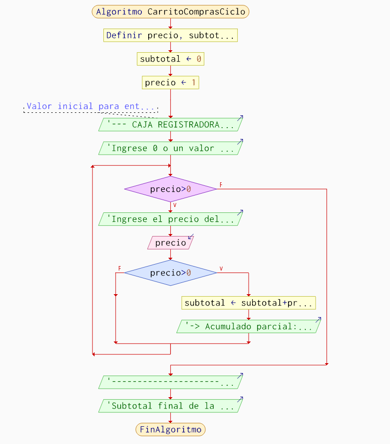
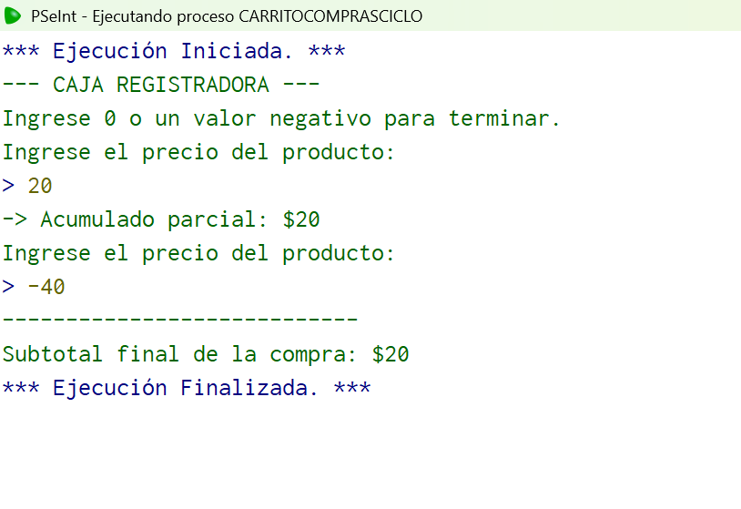
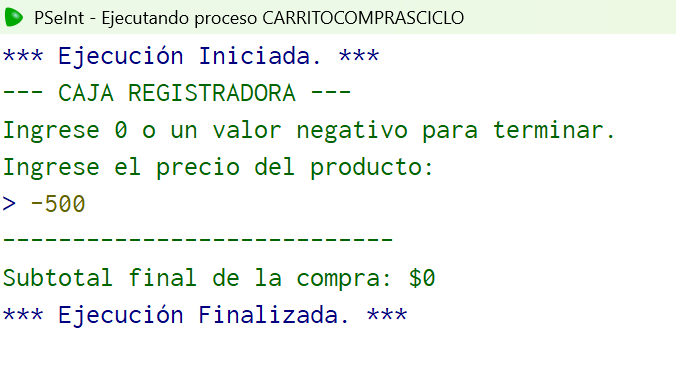

Caja registradora con ciclo.
El algoritmo acumula precios positivos en un subtotal. El ciclo termina cuando se ingresa 0 o un valor negativo; ese valor de cierre no se agrega a la compra.
Algoritmo en PSeInt:
Algoritmo CarritoComprasCiclo
Definir precio, subtotal Como Real
subtotal <- 0
precio <- 1
Escribir "---- CAJA REGISTRADORA ----"
Escribir "Ingrese 0 o un valor negativo para terminar."
Mientras precio > 0 Hacer
Escribir "Ingrese el precio del producto:"
Leer precio
Si precio > 0 Entonces
subtotal <- subtotal + precio
Escribir "-> Acumulado parcial: $", subtotal
FinSi
FinMientras
Escribir "Subtotal final de la compra: $", subtotal
FinAlgoritmoDiagrama de flujo:

Tabla de traza:
Se traza cada lectura y la actualización del subtotal. El subtotal inicial es 0.
| Caso / paso | Precio leído | ¿Precio > 0? | Subtotal | Acción / salida |
|---|---|---|---|---|
| 1 / inicio | — | Sí (inicializado en 1) | 0 | Inicia el ciclo |
| 1 / lectura 1 | 20 | Sí | 20 | Acumulado parcial: $20 |
| 1 / lectura 2 | -40 | No | 20 | Termina; no suma el valor de cierre |
| 1 / fin | — | No | 20 | Subtotal final: $20 |
| 2 / lectura 1 | -500 | No | 0 | Termina sin productos; subtotal final: $0 |
| 3 / lectura 1 (borde) | 0 | No | 0 | Termina sin sumar; subtotal final: $0 |
Evidencia de ejecución:

Prueba #1: suma 20; el valor -40 finaliza el ciclo sin alterar el subtotal.

Prueba #2: un valor negativo como primera entrada deja el subtotal en 0.
Factura descompuesta en SubProcesos.
La factura delega el registro de los precios y la presentación del resumen en SubProcesos. El ejemplo calcula el subtotal de los productos; no aplica impuestos ni descuentos.
Árbol de componentes:
- FacturaCompra (algoritmo principal)
- RegistrarProductos (SubProceso): repite la lectura, acumula los precios positivos y devuelve el subtotal.
- ImprimirFactura (SubProceso): muestra el subtotal y el total a pagar.
Algoritmo modular en PSeInt:
Algoritmo FacturaCompra
Definir subtotal Como Real
subtotal <- 0
RegistrarProductos(subtotal)
ImprimirFactura(subtotal)
FinAlgoritmo
SubProceso RegistrarProductos(subtotal Por Referencia)
Definir precio Como Real
precio <- 1
Escribir "Ingrese 0 o un valor negativo para terminar."
Mientras precio > 0 Hacer
Escribir "Ingrese el precio del producto:"
Leer precio
Si precio > 0 Entonces
subtotal <- subtotal + precio
Escribir "Producto agregado: $", precio
FinSi
FinMientras
FinSubProceso
SubProceso ImprimirFactura(subtotal)
Escribir "----- FACTURA -----"
Escribir "Subtotal: $", subtotal
Escribir "Total a pagar: $", subtotal
FinSubProceso